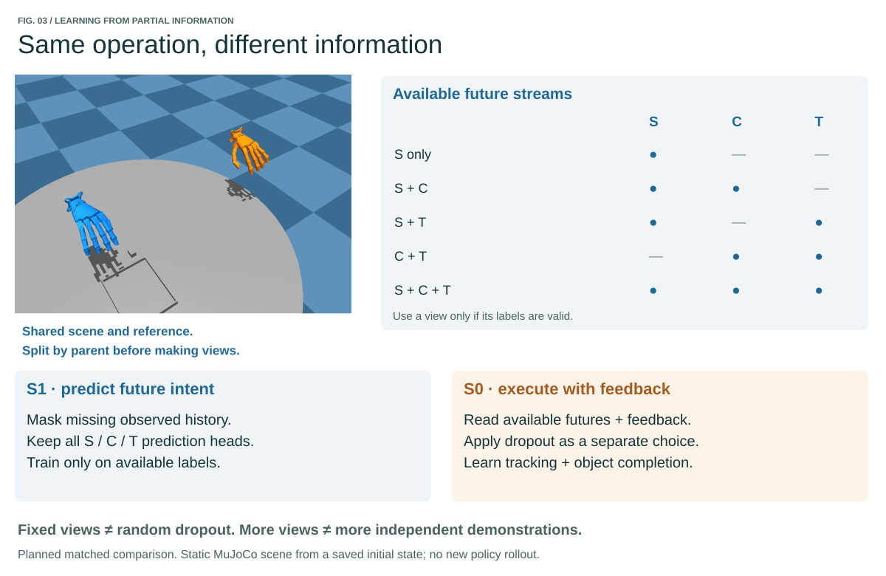

DEXTEROUS MANIPULATION
Towards a Unified Dexterous Manipulation Interface
Connecting high-level intent and physical execution through state, command and tactile futures.
A high-level model may know that a flower belongs in a vase. Dexterity lies in carrying that intention through changing contact: straightening a stem that has slipped, easing a finger that blocks insertion, and releasing after the vase supports the flower.
I propose a unified interface for dexterous manipulation: future hand state (S), requested command (C) and desired tactile (T), synchronized with an end-effector trajectory. S1 expresses how an interaction should unfold through this interface; S0 learns how to realize it through physical feedback.
Each stream preserves a different part of the intention: the motion to realize, the request made to the hand, and the contact to maintain or change. Together they specify more of the operation than a pose trajectory alone. S0 learns how to reconcile these goals as the object moves, support changes and the hand departs from its expected state.
Unified means preserving the same intent semantics across upstream sources, tasks and training data. A vision-language-action (VLA) or world-action model (WAM), an operator and a recorded reference can all supply the future packet. The intended motion and contact change with the task; the meanings of S, C and T remain consistent. Human demonstrations, robot teleoperation and simulation supervise whichever components they observe, with explicit robot mappings and contact calibration.
The note develops this S1–S0 interface and a learning strategy for both sides: joint prediction from partially labelled data, and RL execution that combines reference tracking with object-task completion. The central question is which parts of an intended interaction must be communicated for a learned executor to carry it through changing contact.
One intention, three complementary futures
| Level | Responsibility | Output |
|---|---|---|
| S1: intention | Choose the intended continuation from the task, scene and history | A timed end-effector reference and joint S/C/T future packet |
| S0: execution | Use that packet and live feedback to follow the operation, adjust contact and complete the task | Robot motor targets and, in the full action design, stiffness/damping parameters |
Three meanings within one future intention
A finger can remain almost still while its controller keeps requesting closure against an object. The next useful action might maintain the load, ease it or transfer support to another finger. A future hand pose captures only part of this decision. I represent the intended continuation with three streams:
- Hand state (S): the hand shape and keypoint motion the executor should realize over the coming interval.
- Requested command (C): the upstream requested hand-target trajectory, preserving the request made under load even when the hand does not reach it.
- Desired tactile (T): the contact trajectory the executor should pursue, including maintaining, increasing, easing, redistributing or releasing loads.
Preserve meaning across the S1–S0 boundary
S1 predicts all three streams together as a future chunk. Each stream carries timestamps, a coordinate frame, an anchor, validity and confidence. State changes are anchored to the observed state; command changes use the upstream requested-command anchor at the same defined control level. A valid zero tactile change means maintaining the anchored contact target, while a missing target leaves it unspecified. Current tactile measurements remain a separate feedback input to S0.
The end-effector reference locates the hand in the scene. A representation such as MANO can carry the hand-state and requested-pose streams; a validated mapping relates them to the robot, and tactile targets use a specified contact representation. The same meanings apply when the packet comes from an autonomous model, an operator or a recorded reference. Robot mappings and contact calibration define where those meanings are shared.
At each control step, S0 reads the relevant portion of the future packet by its timestamps and combines it with current feedback. S1 can issue a new chunk from newer observations while S0 continues execution. This division gives the high-level model responsibility for the intended continuation and the executor responsibility for the immediate physical response.
The reference streams and the execution record have different roles. A demonstrated reached state can become an S target for a new rollout. C retains the upstream request at a defined controller level. S0 produces its own motor request; the controller applies it subject to actuator limits. Recording each separately preserves the original intention when execution requires a correction.
The future wrist and hand motion together with C and T express the requested operation in its scene: an insertion path, for example, provides the intended relation to the vase. Object observations describe progress. Each task specifies how its desired outcome is expressed through the interface and how completion is scored.
S0 learns the motor decisions that realize these goals. It receives the future streams, current proprioception and controller feedback, available touch, and recent causal history. The intended action design includes joint targets and stiffness/damping parameters, so RL can adjust position tracking and compliance as contacts change. Target offsets can regulate force even with fixed gains; learning gains adds control over the response to displacement. The joint objective below supplies the learning signal for these decisions.
Figure 02 shows the historical fixed-wrist interface with 30 future points and joint target, stiffness and damping outputs. The current bimanual implementation uses a 10-point packet and 52 action values.

Learn to turn intention into contact skill
S0 is an intent-conditioned policy trained with RL. Training packets can come from demonstrations or specified operation goals. Its objective combines tracking the valid S/C/T targets and progressing toward the object goal, with physical and actuator limits enforced during execution. The reference describes the requested motion and contact behavior. Demonstration-derived references also guide the policy to retain the demonstrated contact roles and continuity.
State tracking compares the resulting hand motion with S. Command tracking compares the applied controller target with C after both are expressed at the same control level and time. Tactile tracking compares the measured contact signal with T in a common representation. Validity masks select the available terms. The object reward scores the requested outcome: a cube reaching the specified face, several objects being lifted together, or a flower remaining in the vase after release.
Joint training from the start encodes a trade-off. A local departure from the reference costs tracking reward but can earn object reward by restoring support or clearing a contact. Continuing the reference then advances the original operation. Tracking-only, object-only and joint training test whether the learned behavior achieves that balance.
A reasonable reference can guide learning even when direct replay is imperfect. Dexplore [2] similarly treats demonstrations as soft guidance while learning task execution. Here, reconstruction should preserve the object’s geometry, support surfaces, timing, hand mapping and relevant contacts. RL then learns execution adjustments around a credible operation. Reference repair and learned correction remain separately identifiable.
Real-to-sim records should retain the demonstrated motion, upstream commands and replay outcomes separately, together with the provenance of measured, reconstructed and assumed scene quantities. A correction made by S0 does not rewrite the upstream C target or turn an accidental contact into a desired T label.
Learn with object information, then transfer to visual feedback
A simulation teacher can use current object pose, motion, contact and geometry. Surface or mesh-derived features can expose the rim that blocks a stem or the support surface needed by a finger. The task outcome is defined separately in the reward; current object state is feedback about progress.
The visual student would receive head and left/right wrist images, robot state, recent history and the same future intention. Successful teacher executions provide imitation targets. Corrections on states visited by the student and further task training address errors during its own execution. Comparing students with and without current touch tests the contribution of tactile feedback under the same intent interface.
Train a common interface from heterogeneous data
Human motion recordings, robot teleoperation and simulated interactions provide supervision for different parts of the same interface. These are training sources for S1’s future predictions. The target interface stays complete: S1 predicts S, C and T together, while each example supervises the outputs for which it has valid labels.
| Source | Potential targets | Label construction |
|---|---|---|
| Human hand recording | S after robot mapping | Use mapped demonstrated motion as the state reference |
| Robot teleoperation | S and independently recorded C; T where suitable touch is recorded | Identify the command’s control level and select contact segments that represent the desired operation |
| Simulation | Any valid subset of S, C and T | Use specified goals or qualified successful executions; retain scene, controller and label provenance |
A tactile measurement can become a target when it is selected as the contact to reproduce. Touch from a successful demonstration can supply a future T reference; a predicted contact trajectory can also serve as a goal after checking its suitability. Measurements, predictions and designed goals retain their source and confidence. Failed or excessive loading is useful feedback about execution, but does not automatically qualify as the desired target.
S1 uses a shared visual model with separate state, command and tactile queries and output heads. An S-only example trains the state head; an S+C example trains both available heads; a fully labelled example trains all three. Per-head loss masks select valid future labels, and attention masks mark missing historical inputs. Each head needs valid supervision somewhere in the training set.
The shared model can learn conditional relationships among the streams. The same hand motion can accompany different loads, depending on geometry, controller settings and the operation. Partial-label training therefore learns predictions under those conditions; it does not assume that any two streams uniquely determine the third.
S0 uses modality dropout to practice execution with incomplete future intent. Training hides a stream together with features derived from it, exposing the policy to different combinations of reference and feedback. Fixed-modality tests and deliberate changes of intent then measure which signals the policy actually uses. Missing source labels, missing historical inputs, future-input dropout and current sensor failures affect different parts of the system and are recorded separately.
Separate execution tests from prediction tests
The planned comparison constructs S-only, S+C, S+T, C+T and S+C+T views from the same eligible simulation operations. Split parent recordings before creating windows or modality views. Keep object, reference, initial-state distribution, data exposure and physical limits matched.
First, supply reliable reference streams directly to S0 and vary their availability. This isolates their value for execution. Second, compare S1 models trained with different label availability using a common executor and fixed input protocol, including reliable-reference performance as a comparison. Finally, evaluate the predicted intents in the full asynchronous system. Random dropout is a separate training factor in these comparisons.

One interface, nine contact decisions
Across these operations, S1 specifies the continuation and S0 is responsible for the contact decisions that carry it through. Pressing requires loading and unloading; insertion transfers support to a vase; uncapping assigns a different role to each hand. S, C and T retain their meanings across these changes in task.
Current replay snapshot: five complete, four partial. All nine videos show full-length physical replays of recorded wrist and finger motion, at the original speed. The captions pair each observed outcome with the intended S1/S0 roles. Replay setup and task checks.
Press and release
Current result. The pad compresses under the hand, contact unloads, and its shape recovers after withdrawal.
S1 intent. Specify the pressing motion and the transition from loading to release.
S0 execution goal. Regulate contact while following the motion, then unload cleanly.
Clip-to-tray placement
Current result. The clip is picked up, carried to the tray, released and left resting inside it.
S1 intent. Specify pickup, transport and the hand opening for release.
S0 execution goal. Keep the clip supported during transport and transfer its weight to the tray.
Right-hand flower insertion
Current result. The right hand lifts the flower, guides the stem into the vase and releases it in a stable position.
S1 intent. Specify the approach, stem alignment, insertion and release.
S0 execution goal. Maintain the grasp near the rim and transfer support to the vase.
Left-hand flower insertion
Current result. The left hand carries the flower into the vase, releases the stem and withdraws.
S1 intent. Express the same insertion and support transitions for the left hand.
S0 execution goal. Coordinate the grasp with rim contact and release once the vase supports the stem.
Bottle-cap removal
Current result. Starting from a partly loosened threaded cap, the hands turn and separate the parts, then place both down.
S1 intent. Assign bottle support to the left hand and turning and separation to the right.
S0 execution goal. Coordinate the two grasps through threaded contact, separation and placement.
Cube layer turning
Current result. The cube is lifted, but the layer turns about 14° while held; a quarter-turn and continuous support are not achieved.
S1 intent. Assign support and turning roles to the two hands, followed by placement.
S0 execution goal. Preserve the supporting grasp while the other hand turns the layer.
Pen uncapping
Current result. The right hand lifts the assembled pen by its cap. The left hand misses a secure barrel grasp, so the cap stays attached.
S1 intent. Specify the second grasp and the separation of cap and barrel.
S0 execution goal. Establish support for each part before applying the separating motion.
Three tape rolls
Current result. The thumb and index finger lift two rolls; the ring-finger roll stays near the table. The three-roll carry remains incomplete.
S1 intent. Assign one roll each to the thumb, index and ring finger, preserving the recorded grasp.
S0 execution goal. Establish all three contacts, carry the rolls together, then release them onto the surface.
Board wiping
Current result. The eraser is picked up, then slips as it meets the board. The loaded back-and-forth strokes and return are incomplete.
S1 intent. Specify the wiping path together with the contact load to maintain.
S0 execution goal. Retain the tool while regulating its contact with the board.
Related work: what crosses the intent–execution boundary
The relevant comparison is how each method expresses intention, assigns responsibility for contact, and connects its high-level prediction to motor execution. This proposal defines a shared S1–S0 dex interface with synchronized S/C/T semantics, then studies a learned predictor and an RL executor on its two sides. Teleoperation control, reference tracking and tactile policies each provide a direct comparison for part of that design.
Intent, contact and executable commands
LUCID [10] learns intent from human video and execution in simulation. Object flow and a rough palm pose form its shared interface across embodiments. TeleDexter [11] learns low-level hand–object co-tracking from consecutive subgoals, using sparse subgoal rewards and dense tracking rewards. LUCID directly informs the autonomous intent–execution division; TeleDexter shows how operator intent can drive learned contact execution. The proposed interface makes state, command and tactile futures explicit at this boundary, with the same meanings for learned S1 predictions and operator-provided references.
Contact-Grounded Policy (CGP) [24] is the closest connection to the three signals themselves. Under a particular sensing and compliance-controller setup, it models the relationship among actual state, tactile feedback and controller target. A diffusion model predicts future state–tactile trajectories, and a learned consistency mapping converts them to executable targets. Here, S1 supplies S, C and T jointly across an explicit interface; S0 learns motor actions from that packet, feedback and object-task reward. A matched S+T executor tests C’s additional value; comparison with a consistency mapping addresses the choice of execution mechanism.
CARD [12] retargets human motion while preserving contact-force targets, then tracks joint and force references with a tactile admittance/impedance controller. This provides a concrete motion-plus-force execution comparison. The proposed S0 learns how to coordinate those goals through contact changes and task progress. HACo [13] instead learns compliant actions from load-regulated teleoperation, with command–state discrepancy as auxiliary supervision and tactile/joint-torque feedback for action generation. Its regulated action targets motivate careful separation of upstream C from the commands S0 ultimately executes.
TouchWorld [6] predicts tactile subgoals, generates goal-conditioned action chunks and refines them with rapid tactile/proprioceptive residual feedback. Future contact prediction and fast correction therefore have a direct architectural precedent. The interface proposed here specifies the future motion, command and contact goal that cross between the levels, together with their timing and validity. Its information content and learned execution should be tested separately from the benefit of a faster feedback loop.
Learning from motion references at scale
DexTrack [1] combines reinforcement and imitation learning with mining successful tracking demonstrations. Dexplore [2] jointly learns retargeting and control using references as soft guidance. AdaDexTrack [3] adds online modulation around a distilled tracker. These establish reference-guided learning and correction as foundations. S/C/T specifies the information available for such corrections, while the original issued reference and executed action remain separately recorded.
FlashDexRetarget [21] learns across many references with off-policy RL and geometric hand–object supervision, amortizing retargeting across a motion collection. ManipTrans [4] transfers bimanual skills through a general motion imitator and task-specific residuals. DONIC [5] trains a shared bimanual tracker with PPO, behavioral cloning and object-centered rewards that reflect each hand’s contact role. These are references for shared execution and preservation of demonstrated interactions; the proposed modality study asks which intent signals help that learning.
Functional goals, data and evaluation
DemoFunGrasp [22] conditions demonstration-editing RL on grasp style and affordance, then uses visual imitation for execution. Its separation of how and where to grasp helps define functional intent. Mana [16] and ArtManip [17] extend functional grasping into articulated-tool manipulation, making geometry and mechanism state relevant to the proposed teacher. SimDuoReal [14] learns object-goal-conditioned bimanual skills and distills experts into a shared policy; Dexora [15] learns high-DoF bimanual actions from synthetic and real teleoperation. They provide complementary task-goal and action-supervision settings.
EgoDex [7] supplies egocentric hand motion, and DexTouch-WM [8] learns action-conditioned visual–tactile prediction from human and robot interaction. TacThru [18] combines simultaneous tactile and visual sensing with multimodal imitation. These sources and models motivate heterogeneous supervision: a recorded or predicted contact trajectory becomes a T target through its selection and use as an execution goal, with its provenance retained.
Taccel [19] provides GPU simulation of vision-based tactile sensors. Bench2Dex [20] supplies a shared simulated tactile interface and structured bimanual evaluations. HandsOn [23] tests demonstration-based execution and transfer across assets, relations, skill compositions and deformable objects. These resources support evaluating the intended capability through contact establishment, coordinated motion and maintenance of the completed goal.
sim-tactile-lerobot [25] connects an Isaac Sim tactile readout to the LeFlexiTac data and policy workflow. Its spatial sensor readings are computed from signed distances to object surfaces, with sensor-compatible normalization. This suggests a useful observation adapter for S0: preserve contact location alongside loading in physical units, with calibration specific to the hand and sensor. Geometric readouts and solver-derived contact forces retain separate provenance. A tactile observation becomes the interface's future T only when it is selected and issued as an execution goal.
From recorded motion to physical task outcomes
Five reconstructed operations complete their full task: pressing and recovery, clip placement, flower insertion with either hand, and removal and placement of a partly loosened bottle cap. The four partial replays identify specific contact transitions to solve: maintaining cube support through a layer turn, securing the pen barrel before separation, engaging the third tape roll, and retaining the eraser during loaded wiping.
These outcomes make the execution objective concrete. The intended hand motion continues in each recording, while task progress depends on which contacts form and persist. This motivates scoring reference tracking and object-task completion together. The S/C/T comparisons above are designed to test which additional intent signals help a learned executor resolve those decisions.
The replay controller follows recorded wrist and finger trajectories and uses the independently recorded joint requests. Gravity, contact and the reconstructed mechanisms determine object motion. The sponge uses a deformable model; the bottle cap has threaded contact. Object dimensions, mass, friction and fabric-cover geometry are nominal reconstruction parameters. Each video retains the complete source timeline, including approach, pauses and the ending.
Each displayed replay is one reconstructed recording. “Complete” means it satisfies the task-specific outcome together with motion and contact checks; five of nine is a snapshot of these examples. The learned-policy experiment is reported in the implementation snapshot. Solver contact signals provide simulated feedback; these recordings contain no measured tactile stream.
How the replay outcomes are checked
Checks cover the complete recorded timeline. A complete replay must preserve native joint limits, remain within 5° of recorded finger motion and 5 mm / 3° at the wrists, and meet a 2 mm contact-penetration tolerance. Objects receive no direct actuation or hand attachments. Task-specific checks include continuous carrying, the required manipulation, and release and settling where the source operation includes them.
The partial examples retain their actual outcomes and failed checks. The cube exceeds the finger-motion tolerance; wiping also exceeds wrist and contact tolerances. The downloadable record includes these metrics alongside task outcomes, video hashes and full-stream playback checks. Visual review sampled the task phases.
Hand assets: Wuji Technology (MIT). Replay outcomes and motion checks contains the source hashes, per-task results and verification scope for all nine clips.
Test what unification contributes
The evaluation separates the information conveyed by the interface, S0’s ability to execute it, and S1’s ability to predict it. Keep the packet semantics and S0 fixed when comparing reliable references with learned S1 predictions. The first execution evaluation is a complete operation under clean conditions. Score reference adherence, physical validity and object completion separately, then report their joint outcome. Watch the full contact sequence: support, motion, contact transitions, settling and release.
To test whether S0 uses the intention, hold the starting scene fixed and supply physically compatible alternative references: a different turn direction, a changed request under load or a different transfer of support between fingers. Keep unrelated streams matched where feasible, and measure action, contact and object outcomes. The key comparison is whether explicit C or T resolves an execution choice left ambiguous by S and current feedback. Pair this with tracking-only, object-only and joint objectives to test the contribution of the training terms.
Compare fixed-gain execution with learned stiffness/damping under matched references and training exposure to test how compliance affects contact and completion. Once clean execution works, apply short, sustained or changing disturbances during the operation. For an isolated S0 comparison, keep the upstream intention fixed across the clean and disturbed trials. Compare policy feedback with a fixed controller and the saved clean action sequence under the same disturbance. The outcome of interest is useful correction: completing the intended operation when the matched controls cannot.
In the full system, S1 updates normally and asynchronously. S0 uses feedback while the next observation, inference and intention update are in flight. Record the disturbance, the first S0 response and the arrival of the next S1 update to identify their contributions. The two levels should continue the same task as the local correction and new intention meet.
Towards unified dexterous execution
The next learning milestone is an S0 policy that follows a credible reference, maintains the needed contacts and completes the object task within physical limits. The interface definition comes first. Development then proceeds through S0 execution with reliable intent, a qualified teacher and visual student, learned S1 predictions, and the normal asynchronous loop with and without disturbances.
The execution and prediction comparisons above test which information supports each operation and whether partially labelled data can teach S1 to supply it. Per-task specialists and shared policies should be compared at matched data exposure, with hand-only and larger robot settings reported separately. Reorientation, changing finger contacts, load sharing, placement and insertion give this comparison a concrete range of contact decisions.
A model-based extension would reuse accumulated state–action transitions to learn dynamics and improve execution. SuperMimic [9] demonstrates this direction for humanoid whole-body tracking: it learns differentiable dynamics from simulator transitions and trains a policy through short imagined rollouts. Applying that mechanism to dexterous contact is a further research direction. Its contribution should be measured through task outcomes, real environment samples and added computation against a matched PPO baseline.
The proposal is to unify dexterous intent at the S1–S0 boundary, and learn prediction and execution around that interface. State, command and tactile futures connect high-level plans to the motor decisions that realize them. Heterogeneous demonstrations teach the predictor; task-driven learning teaches the executor. For the flower, S1 expresses the intended insertion and support transitions, while S0 turns them into the changing grasp and contact that carry the stem into the vase.
Learned S0: a frozen prototype
A separate learned-policy prototype uses two floating Wuji Hand 2.2 hands, each with a 6-DoF wrist and 20 finger joints. PPO runs at 50 Hz with 52 actions: 12 wrist velocities and 40 finger targets. Its intent packet contains 10 future points over 0–0.9 s.
This frozen run trained on five teleoperation task families with fixed controller gains and no valid desired-tactile labels. Task completion has not yet been established in this bimanual configuration. It records an implementation stage of reference-conditioned action learning. The full interface, learned impedance and visual student remain separate evaluation milestones.
Frozen run: data, metrics and wrist diagnosis
This frozen run covers five teleoperation task families: clip placement, three-roll lifting, bottle-cap manipulation, wiping and flower insertion. Its policy checkpoints and scene models are separate from the reconstructed replays in the gallery.
The corpus contains 25 parent recordings processed into 35 segments and 23,066 frames. The parent split is 15/5/5 for training, validation and test. Initial-state checks pass for 32 of 35 starts. Training uses 17 segments / 12,665 frames; validation uses 10 segments from five other parents. Public hand–object data is outside this run.
Object geometry and motion include nominal reconstructions. Some full reference trajectories retain substantial intersections despite passing initial-state checks. The teleoperation data supplies no valid desired-tactile targets. Input dropout is independent per hand and modality with probability 0.1, shared across the future horizon.
The packet has 78 values per hand at each future point: 156 across both hands and 1,560 in total. The actor uses robot state and the intent packet; the critic also receives privileged scene information. Controller gains are fixed. The privileged-actor teacher and visual student described above are later stages.
| Held-out reference metric | Before training | After 1,000 updates |
|---|---|---|
| Reference coverage | 62.7% | 61.8% |
| Right wrist error | 43.6 mm | 65.4 mm |
| Left wrist error | 75.3 mm | 98.7 mm |
Coverage measures the scored reference fraction before termination, averaged within each parent and then equally across parents. Wrist errors use the time prefix shared by the initial and final policies. Task completion is evaluated separately.
Training used 512 environments for 1,000 PPO updates: 16,384,000 environment transitions. Recorded metrics were finite, capacity did not overflow, and two independent CPU reloads reproduced the saved actions.
Validation trajectories contain no completed clip placement, simultaneous tape lift, effective wiping or flower insertion. The cap model used in that training run lacks a thread constraint, so its bottle contact cannot establish unscrewing.
Offline integration of saved wrist-velocity actions reconstructs the policy targets. After training, mean target-to-reference errors are 66.8 mm on the right and 101.2 mm on the left; actual-wrist-to-reconstructed-target errors are 2.1 and 5.1 mm. These use the same common-prefix, parent-weighted comparison. They locate the discrepancy in the command chain; identifying its cause requires examining policy learning and reference quality. The targets are reconstructed from saved actions.
References
- Xueyi Liu et al. DexTrack: Towards Generalizable Neural Tracking Control for Dexterous Manipulation from Human References. ICLR, 2025.
- Sirui Xu et al. Dexplore: Scalable Neural Control for Dexterous Manipulation from Reference-Scoped Exploration. CoRL, 2025.
- Jianibieke Adalibieke et al. AdaDexTrack: Dynamic Modulation for Adaptive and Generalizable Dexterous Manipulation Tracking. CVPR, 2026.
- Kailin Li et al. ManipTrans: Efficient Dexterous Bimanual Manipulation Transfer via Residual Learning. CVPR, 2025.
- Mingze Sun et al. DONIC: Generalist Dexterous Bimanual Tracking Control from Human Demonstrations. arXiv preprint, 2026.
- Jianyi Zhou et al. TouchWorld: A Predictive and Reactive Tactile Foundation Model for Dexterous Manipulation. arXiv preprint, 2026.
- Ryan Hoque et al. EgoDex: Learning Dexterous Manipulation from Large-Scale Egocentric Video. ICLR, 2026.
- Yan Qin et al. DexTouch-WM: Learning Action-Conditioned Tactile World Models from Human Touch for Dexterous Robot Manipulation. arXiv preprint, 2026.
- Qiayuan Liao et al. SuperMimic: Scaling Humanoid Whole-Body Control with One Differentiable World Model. Accepted at CoRL, 2026.
- Harsh Gupta, Guanya Shi and Wenzhen Yuan. LUCID: Learning Embodiment-Agnostic Intent Models from Unstructured Human Videos for Scalable Dexterous Robot Skill Acquisition. CoRL, 2026.
- Puhao Li et al. Towards Human-level Dexterous Teleoperation. CoRL, 2026.
- Cunxi Dai et al. CARD: Contact-Anchored Retargeting for Dexterous Manipulation. arXiv preprint, 2026.
- Naisheng Ye et al. HACo: Learning Haptic Active Compliance for Force-Aware Dexterous Manipulation. arXiv preprint, 2026.
- Qiyang Yan et al. SimDuoReal: Object-Centric Bimanual Policy for Emergent Dexterity. arXiv preprint, 2026.
- Zongzheng Zhang et al. Dexora: Open-source VLA for High-DoF Bimanual Dexterity. ICRA, 2026.
- Zhao-Heng Yin et al. Mana: Dexterous Manipulation of Articulated Tools. arXiv preprint, 2026.
- Yang Yang et al. ArtManip: Category-Level Articulated In-Hand Manipulation. CoRL, 2026.
- Yuyang Li et al. Simultaneous Tactile-Visual Perception for Learning Multimodal Robot Manipulation. IEEE Robotics and Automation Letters, 2026.
- Yuyang Li et al. Taccel: Scaling Up Vision-based Tactile Robotics via High-performance GPU Simulation. NeurIPS, 2025.
- Zhenjie Yang et al. Bench2Dex: Benchmarking Visuo-Tactile Bimanual Dexterous Manipulation Across Dexterous Hands. arXiv technical report, 2026.
- Kyungmin Lee et al. FlashDexRetarget: Accelerating Dexterous Manipulation Data Generation through Multi-Motion Retargeting. arXiv preprint, 2026.
- Chuan Mao et al. DemoFunGrasp: Universal Dexterous Functional Grasping via Demonstration-Editing Reinforcement Learning. CVPR, 2026.
- Tianwei Luo et al. HandsOn: A Large-Scale Simulation Benchmark for Generalizable Dexterous Manipulation. arXiv preprint, 2026.
- Zhengtong Xu et al. Contact-Grounded Policy: Dexterous Visuotactile Policy with Generative Contact Grounding. Robotics: Science and Systems, 2026.
- heyifan740-code. sim-tactile-lerobot: LeFlexiTac tactile workflow in Isaac Sim. Software repository, accessed November 17, 2026.
Cite this note
Hang Yu. Towards a Unified Dexterous Manipulation Interface. Research note, November 4, 2026. Download BibTeX.
@misc{yu2026learningtoexecute,
author = {Yu, Hang},
title = {Towards a Unified Dexterous Manipulation Interface},
year = {2026},
month = nov,
howpublished = {\url{https://yuhang-harry.github.io/notes/s0-s1/}},
url = {https://yuhang-harry.github.io/notes/s0-s1/},
note = {Research note. First written November 4, 2026; revised November 17, 2026}
}